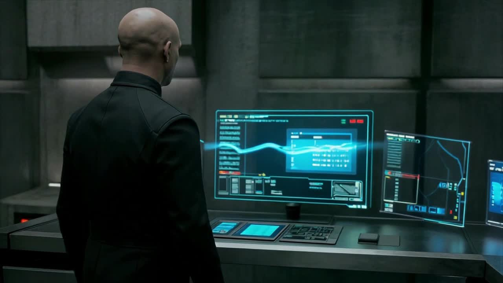
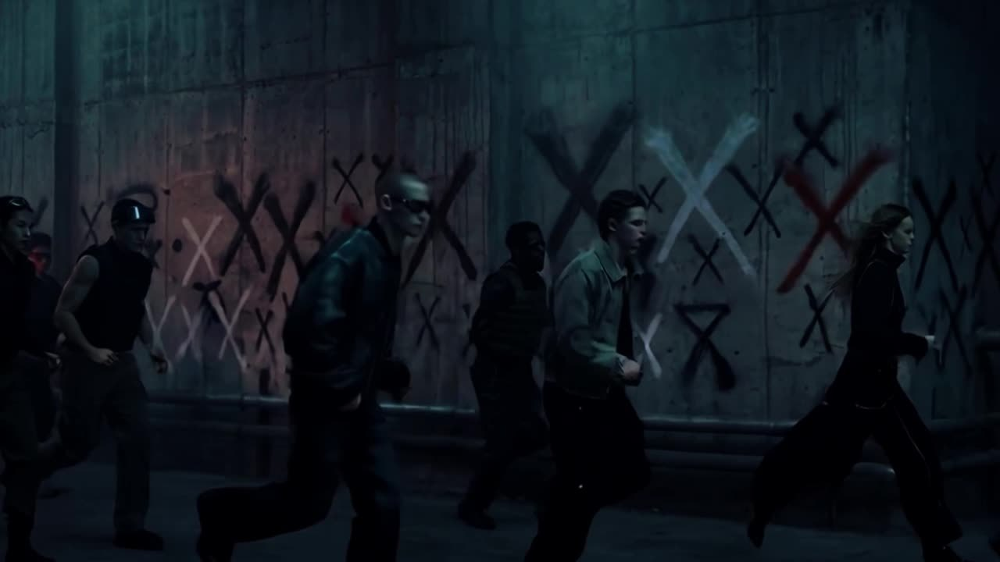

从观察开始
把朋友圈、用户现场、资料库和心理学习里的细节，转化为选题、角色、空间和视觉线索。
Portfolio 2026
从日常观察和用户现场出发，用 AI、空间、文字、物件和活动，把情绪与问题转化为可传播、可参与、可保存的内容体验。
郑嘉钰，产品设计（虚拟时尚方向）本科在读。面向 AI 内容运营、视觉内容策划与体验设计，展示 AI 影像、社媒文案、潮玩 IP、心理与生命议题项目。


只管起舞，只管耕耘
Content Philosophy
在 AI 和算法都偏向简短、直接、碎片化表达的时代，我更重视完整、成体系、能让人停留的文字。内容不只是信息传递，也可以是一段陪伴、一场对话、一种向世界坦诚的方式。
把朋友圈、用户现场、资料库和心理学习里的细节，转化为选题、角色、空间和视觉线索。
用 LLM、AI 图像和视频工具完成资料整理、Prompt 约束、画面生成、风格筛选和发布包装。
把复杂概念压缩成标题、短句、封面、标签、图文结构和可持续更新的栏目。
For NetEase AI Content Operation
这份作品集重点回答一个问题：我如何把 AI 工具、社会议题观察、视觉表达和真实项目执行连接成持续内容生产能力。
IMXS、坠落静默、被单人：AI 生图/视频、Prompt、工作流、风格统一。
IMXS 发布文案、公众号数据：标题、短句、标签、完读率和关注转化。
思感集、公众号、朋友圈：持续输出、时代问题、个体经验与公共议题。
潮玩 IP、展览、沉浸式体验：把内容转成图像、物件、空间和现场参与。
我们来到这个世界，不是为了要改变谁，要创造什么，要做到什么事情而存在的。我们来到这个世界，是为了看花儿怎么开怎么谢，太阳怎么升怎么起，鸟儿怎么飞，鱼儿怎么游的。
Observation Archive
这些不是项目，却是项目发生之前的地方。朋友圈里的雪夜、资料库里的展览吐槽、用户体验照片里的坏动线、心理资料里的情绪词，共同构成我的材料库。
雪夜、路灯、廉价食物、一个人散步。它们让文字保持具体，也让内容不只停留在概念里。
路障、被单、奇怪姿态、视觉错位。这些图像后来进入《被单人》，变成“体面发疯”的潮玩 IP。
看不清、找不到、没地方坐、交互失效。真实场景里的不顺手，是设计问题最早的形状。


Selected Works
每个项目都回答三个问题：它从什么观察开始，经过什么 AI/内容方法，最后能转成什么平台内容或真实体验。



01
从品牌世界观到 AI 图片 / 视频输出
以“海珀波利亚之血”为主题，围绕代表人性与叛逆的 X 精神，将品牌世界观、视觉风格、剧情脚本和分镜可视化推进到 AI 生图与 AI 视频。
02
长期学习戏剧治疗、绘画治疗、音乐治疗、阿德勒心理学、荣格与存在主义方向，并通过《思感集》、公众号和朋友圈观察持续输出社会议题与个体经验。
03
AI 辅助潮玩 IP。以“蒙着旧被单的打工人”为核心符号，将疲惫、荒诞和自我保护心理转化为潮玩、海报、插画与表情包，具备 meme 与社媒传播潜力。

04
通过 AI Video Bible 与 Art Bible 建立角色一致性、镜头语言和场景词库，适配 Veo、Runway、可灵、Midjourney、Flux 等工具，体现 AI 工作流搭建能力。
05
“光开始说谎。影子在墙上擅自修改剧本。”
AI 辅助生成后进行筛选、改写与标签化包装，形成适合小红书、短视频封面和系列发布的文案资产。
06
将长文研究压缩为内容选题：AI 图像为什么天然适合超现实主义、Prompt 是否是一种自动书写、梦感图像如何被机器生成。适合转化为 AI 行业/图文选题。


07
将心理、生命教育与艺术体验转化为空间、物料、互动和现场流程。代表项目包括北京市第五中学生命展与《越过珊丘》沉浸式戏剧体验，并在策展物料中使用 AI 辅助视觉推演。
Publishing Evidence
公众号数据不是流量成绩包装，而是一个弱分发环境下的内容反馈样本：标题是否吸引、正文是否被读完、朋友圈转发是否影响冷启动。
《我绝不认输》在朋友圈冷启动下获得 76 阅读，新增关注 2。
《总有人要仰望星空》平均阅读 1.57 分钟，完读率 80%，新增关注 4。
AI 工具观察、社会议题短评、心理与艺术治疗学习、视觉内容案例拆解。
Personal Archive
硬盘资料库不是最终作品，但它解释了作品从哪里来：产品设计、心理咨询、生活兴趣三条线长期并行。
用户体验观察、形态、材料、图形、服装、珠宝、活动物料。
情绪识别、存在主义、格式塔、非暴力沟通、艺术疗愈、文学疗愈。
摄影、手账、梗图、影视、食物、自然、楼梯、影子和书架。
Selected Notes
《思感集》不作为大篇幅作品展示，而作为思想底本：它解释我为什么关心生命、情绪、表达与陪伴。
真正的爱是一种接受，无条件的接受。所以爱自己，就是接受自己此时此刻，允许自己产生一切念头。
文字真是一件伟大的发明。一个善于表达交流的人永远不可能变得偏执。
我想做的是给人指引航向的守灯人，而不是告诉别人停在原地是因为你的指南针坏了。
悲伤也好，愤怒也好，焦虑也好，都是我。
About
北京服装学院产品设计（虚拟时尚方向）本科在读。关注 AI 内容生产、潮玩 IP、沉浸式体验、心理与生命教育议题。希望把 AI 作为方法，而不是目的：用它帮助内容更清楚、更完整、更可传播。
查看重新整理后的简历